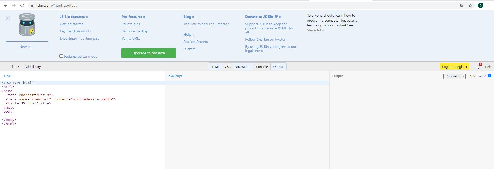
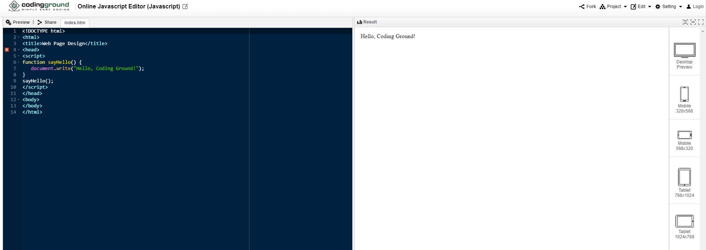
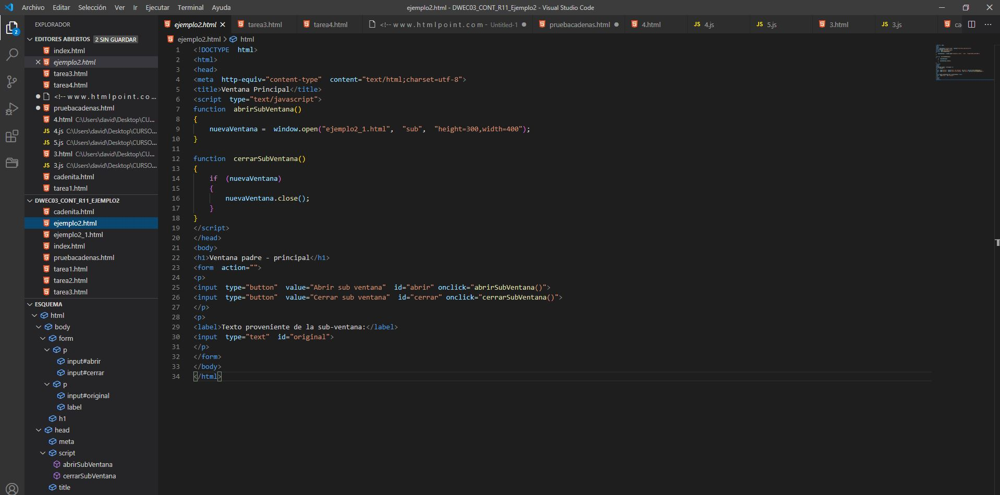

Son numerosas las herramientas que podemos usar para escribir nuestro código HTML junto a JavaScript. La idea es decantarse por editores que posean características que te faciliten la programación web, como por ejemplo:
- Sintaxis con codificación de colores. Que resalte automáticamente en diferente color o tipos de letra los elementos del lenguaje tales como objetos, comentarios, funciones, variables, etc.
- Verificación de sintaxis. Que te marque los errores en la sintaxis del código que estás escribiendo.
- Que te permita diferenciar los comentarios del resto del código.
- Que genere automáticamente partes del código tales como bloques, estructuras, etc.
- Que disponga de utilidades adicionales, tales como cliente FTP para enviar tus ficheros automáticamente al servidor, etc.
Dependiendo del sistema operativo que utilices en tu ordenador dispones de múltiples opciones de editores. Cada una es perfectamente válida para poder programar en JavaScript. Algunos ejemplos de editores web gratuitos son:
- Para Windows tienes: Visual Studio Code, Sublime , Atom, Brackets, Notepad++, Light Table, Aptana Studio, Bluefish, Eclipse, NetBeans, etc.
- Para Macintosh tienes: Visual Studio Code, Sublime , Atom, Aptana Studio, Light Table,, Bluefish, Eclipse, KompoZer, Nvu, etc.
- Para Linux tienes: Visual Studio Code, Sublime , Atom, Brackets ,Light Table, Geany, KompoZer, Amaya, Quanta Plus, Bluefish, codetch, etc.
Disponemos de herramientas online como JSBin: https://jsbin.com/?html,output

O codingground: https://www.tutorialspoint.com/online_javascript_editor.php

Como IDE en este curso vamos a seguir Visual Studio Code. Entre las características que nos hacen decantarnos por este editor (que aunque su fabricante es Microsoft, es opensource): instalación sencilla, soporte de los lenguajes más populares (HTML, CSS, Javascript, C, Go, Ruby, PHP, Pyton, Java, Perl,etc.), relleno de funciones y autocompletado, incluye gits o sistemas de control de versiones, tiene multitud de extensiones o plugins para por ejemplo elegir temas, obtener códigos personalizables; tenemos el código abierto y una gran comunidad detrás etc

Para su descarga, instalación y uso consultar: https://www.youtube.com/watch?v=HVzFLw5r2EM
Para configurar algunas extensiones útiles consulte: https://www.youtube.com/watch?v=BO-nhyqpm7A